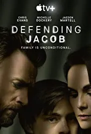

The genetics
The series makes the heredity of violence an explicit question. Fearing that the prosecution will invoke the so-called 'murder gene', the family consults Dr. Vogel, who reports that Jacob tested negative for it, although Andy and Billy are positive, because the variant is inherited through the mother, but that all three Barbers carry another variant linked to violence and reduced empathy. Andy clings to the reassuring result; Laurie, remembering Jacob's aggressive moments as a child, sinks into doubt, and the genetic findings feed the suspicion that destroys the family. The series weighs nature and nurture without choosing and never says whether Jacob is guilty. The 'murder gene' echoes real research on the MAOA gene, which lies on the X chromosome and so passes from mother to son. As scientists pointed out when the series aired, there is no murder gene: some variants slightly raise the risk of violence, mainly in people abused early in life, but none determines behaviour.
How genetics is portrayed
- Overall portrayal of genetics
- negative Genetics appears as a source of fear and suspicion rather than answers: the tests settle nothing about Jacob's guilt and feed the doubt that destroys the family, and the series ends in tragedy.
- Outcome of the genetic intervention
- negative The test results, a negative for the 'murder gene' but a shared violence-linked variant, deepen Laurie's doubts about her son, which end in the car crash that leaves Jacob in a coma.
- Dr. Vogel
- neutral Aim: benevolent (positive). A psychiatrist specialising in behavioural science and genetics, Vogel tests Jacob and takes DNA from Andy and Billy to help the defence prepare against a 'murder gene' argument. She is shown as a professional delivering results, and she encourages Laurie to seek help.
The story
Andy Barber, an assistant district attorney in Newton, Massachusetts, investigates the stabbing of fourteen-year-old Ben Rifkin until the evidence points to his own son Jacob, Ben's classmate, and Jacob is charged with murder. As Andy and his wife Laurie fight to defend him, Andy's long-hidden secret comes out: his father, William 'Bloody Billy' Barber, is serving a life sentence for murder. The defence lawyer sends the parents to Dr. Vogel, a psychiatrist specialising in behavioural science and genetics, who tests Jacob and takes DNA from Andy and from his father, in case the prosecution argues that Jacob carries a 'murder gene'. Andy pursues another suspect, a convicted sex offender, who confesses and then kills himself, possibly under pressure arranged by Billy, and the case is dropped. But Laurie cannot stop doubting Jacob, and the series ends with her crashing the car with him inside, leaving him in a coma.